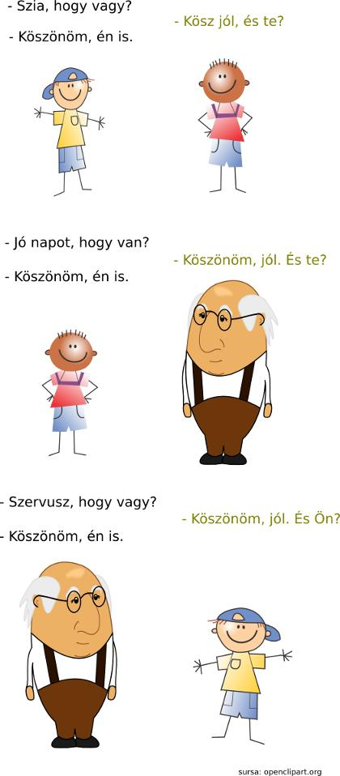
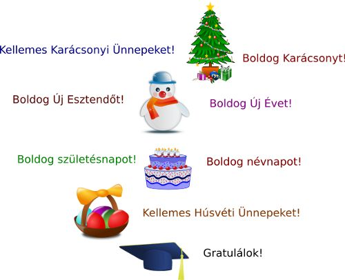
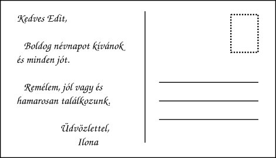

Primii pași · Lecția 003
Adresarea politicoasă
Exersează prezentările și adresarea politicoasă. Compară felul în care vorbești cu un prieten și cu o persoană necunoscută.
În această pagină
În toate dialogurile de până acum personajele au vorbit la persoana a II-a singular (tutuind). În limba maghiară, ca și în limba română, în multe situații ne adresăm partenerului de dialog într-un mod mai formal. În această lecție învățăm despre aceste forme de politețe. După aceea vom învăța câteva urări uzuale, formule de deschidere/încheiere de scrisoare și alte expresii utile.

Replicile din primul dialog sunt deja cunoscute din Lecția 001.
Al doilea dialog pare mai ciudat. De ce spune băiatul din stânga hogy van (literal "cum este") în loc de hogy vagy ("cum ești")? Și ce este acel Ön din al treilea dialog, de ce nu se spune te ca până acum?
În limba română, ne adresăm respectuos unei persoane cu "dumneavoastră", urmat de un verb la persoana a II-a plural (astfel "dumneavoastră" se comportă similar din punct de vedere gramatic cu pronumele personal "voi"). Chiar dacă omitem "dumneavoastră", folosim verbul la persoana a II-a plural. De ex. "Veniți în față!", "Sunteți de aici?"
În limba maghiară, pronumele de politețe care corespund pronumelui "dumneavoastră" sunt Ön la singular și Önök la plural. Spre deosebire de limba română, cu aceste pronume de politețe, verbul se folosește la persoana a III-a (singular, respectiv plural). Chiar dacă nu spunem explicit Ön sau Önök, ne adresăm partenerului folosind verbul la persoana a III-a. Așa se explică acel hogy van din dialog. Van este verbul "a fi" la persoana a III-a (vezi lecția 002).
Într-un exemplu din lecția precedentă, am văzut propoziția Te orvos vagy? "Ești medic?". Probabil că nu am întreba un străin "Ești medic?", mai degrabă am zice "Sunteți medic?", sau "Dumneavoastră sunteți medic?". În maghiară, întrebăm Ön orvos?. Dacă folosim verbul "a fi", aceleași reguli se aplică ca și în cazul pronumelor personale ő, ők (el/ea, ei/ele) pe care le-am învățat în lecția trecută. Adică în multe cazuri omitem verbul "a fi".
Să vedem câteva exemple:
| Singular | |
|
Ön mit csinál? Ön hogy van? Ön jól van! Ön orvos? Ön angol? Ön magas. |
Dvs. ce faceți? Dvs. cum sunteți? Dvs. sunteți bine! Dvs. sunteți medic? Dvs. sunteți englez? Dvs. sunteți înalt(ă). |
|
Hogy van? Jól van? Mit csinál? Kovács úr, hogy van? István, ön hogy van? A doktornő mit csinál? Kovács úr, éhes? Kis úr, otthon van? A tanárnő hogy van? |
Cum sunteți? Sunteți bine? Ce faceți? Cum sunteți, domnule Kovács? Cum sunteți, István? Ce faceți doamnă doctor? Vă e foame, domnule Kovács? Sunteți acasă, domnule Kis? Cum sunteți, doamnă profesoară? |
| Plural | |
|
Önök otthon vannak? Önök hogy vannak? Önök angolok? Önök orvosok? Önök jól vannak? |
Dvs.(mai multe persoane) sunteți acasă? Dvs. cum sunteți? Dvs. sunteți englezi? Dvs. sunteți medici? Dvs. sunteți bine? |
În câteva dintre exemplele de mai sus, înțelesul depinde și de intonație: A tanárnő mit csinál? poate însemna "Ce faceți, doamnă profesoară?", dar și "Ce face doamna profesoară?".
Mai există în afară de Ön/Önök două expresii de politețe destul de des folosite:
-
Maga (singular) / maguk (plural) - sunt echivalente
din punct de vedere gramatical cu Ön/Önök, dar un pic mai puțin formale - similare ca
grad de politețe cu "Dumneata"
Maga se folosește ca Ön, adică este urmat de un verb la persoana a 3-a.
De ex. Maga mit csinál? (Dumneata ce faci?) -
Tetszik
De ex. Hogy tetszik lenni? Cum sunteți?
Tetszik jönni? Veniți?
și la plural:
Hogy tetszenek lenni? Cum sunteți?
Tetszenek jönni? Veniți?
sau la imperativ:
Tessék leülni! Vă rog să stați jos!
Tessenek jönni! Vă rog să veniți (mai multe persoane)!
Tetszik este foarte politicos, literal este verbul "a plăcea", astfel "Hogy tetszik lenni?" s-ar putea traduce literal ca "Cum vă place să fiți?" :). Este folosit mai ales în adresarea către persoane mai în vârstă.
Tetszik este urmat de un verb la infinitiv, de ex. lenni (a fi).
Din punct de vedere gramatical aceste expresii de politețe sunt destul de simple. Dificultatea constă în alegerea expresiei "corecte" în funcție de situație, de vârsta și sexul vorbitorilor, de gradul de rudenie sau de familiaritate etc. În loc să încercăm să descriem toate "regulile" posibile, menționăm că de multe ori și maghiarii au dificultăți în alegerea adresării "corecte" și "regulile" neoficiale se și schimbă cu timpul. De exemplu, cu două generații în urmă, în majoritatea familiilor copiii se adresau părinților la persoana a III-a, dar azi, aproape toți spunem părinților te (tu). În limba uzuală, ca o consecință a globalizării, se pare că folosim tot mai des "tu", uitând de formele de politețe - un fenomen neagreat de puriști :)
Regula care merită deci învățată este numai că în forma de politețe folosim verbul la persoana a III-a.
Menționăm o caracteristică neobișnuită a limbii maghiare legată de numele de persoane: atât în scris cât și oral numele de familie precedă "prenumele". De ex. la "Kovács István", Kovács este numele de familie și István "prenumele". O explicație detaliată găsim pe wikipedia. Dacă un nume maghiar apare într-un context de limbă engleză sau română, de multe ori se folosește ordinea "obișnuită" din aceste limbi, adică prenumele scris primul. Din această cauză pot apărea uneori confuzii.
Poate doriți să exersați pronunțarea expresiilor învățate până acum și să le auziți din mai multe surse. Urmăriți link-urile de mai jos către videoclipuri. Probabil că majoritatea cuvintelor și expresiilor vă vor fi cunoscute. Videoclipurile nu sunt făcute de noi, ele sunt disponibile liber pe internet. Textele sunt traduse în engleză.
1. Câteva dialoguri care folosesc și adresarea politicoasă.Dialoguri traduse în engleză:
2. Dialog 1
3. Dialog 2
4. Dialog 3
În următoarele două dialoguri doar cuvintele sunt traduse, la sfârșitul videoclipului, nu și propozițiile. Încercați să le înțelegeți.
5. Dialog 1
6. Dialog 2
Până acum am învățat despre formulele de adresare și despre ordinea numelor. În continuare vedem câteva expresii des folosite în scrisori și pe cărți poștale.
Expresii de deschidere:
| Kedves ... | Dragă ... |
|
Exemple: Kedves Zoli! Kedves Anna! |
|
|
sau în mod formal: Kedves ... úr/asszony |
lit. "Dragă domnule/doamnă ... " |
|
sau și mai politicos: Tisztelt ... úr/asszony |
Stimate domnule/doamnă ... |
|
Exemplu: Tisztelt Kovács úr! Tisztelt tanár úr! |
Stimate domnule Kovács! Stimate domnule profesor! |
|
formule mai simple: Jó napot/estét |
Bună ziua/seara |
|
sau cu persoane cu care ne tutuim: Szia/ Szervusz/ Hahó |
Salut |
Expresii de încheiere:
| Tisztelettel | Cu stimă |
| Üdvözlettel | Salutări (lit. "cu salutare") |
| Szívélyes üdvözlettel | Salutări cordiale (rar folosit) |
| Szeretettel | Cu drag (din szeretet "iubire") |
| Minden jót | Toate cele bune |
| Köszönettel | Cu mulțumiri (dacă este cazul) |
| Kellemes napot | O zi bună/plăcută |
| További szép napot | O zi frumoasă în continuare |
| Kellemes hétvégét | Un weekend plăcut (din hét "săptămână", vég "sfârșit") |
Iată câteva urări cu ocazia sărbătorilor sau a altor zile speciale:

Explicații:
| Kellemes Karácsonyi Ünnepeket | lit. "Sărbători de Crăciun plăcute", ünnep "sărbătoare" |
| Boldog Karácsonyt (kívánok) | Crăciun fericit (doresc), Karácsony Crăciun, cu -t-ul acuzativului la sfârșit |
| Boldog Új Évet | An nou fericit, boldog "fericit", új "nou", év "an", -(e)t semnul acuzativului |
| Boldog Új Esztendőt | An nou fericit, esztendő "an" (cuvânt mai vechi) |
| születésnap | zi de naștere, születés "naștere", nap "zi" |
| névnap | zi onomastică, név "nume" |
| Húsvéti Ünnepek | Sărbătorile de Paște |
| Gratulálok | Felicitări (lit. "te felicit") |
Un exemplu de carte poștală, combinând cele învățate până acum:

Cuvinte noi:
remélem "sper"
hamarosan "în curând"
találkozunk "ne întâlnim"
Exerciții
1. Adresați-vă rând pe rând unor persoane cu statute diferite, după exemplu:
|
Infinitivul verbului |
Conjugare (la singular) |
Prieten(ă) |
Subordonat ierarhic cu care nu sunteți la pertu |
Superior ierarhic cu care nu sunteți la pertu |
Bunica/bunicul unui prieten |
| csinálni "a face" | (én) csinálok (te) csinálsz (ő) csinál |
Te mit csinálsz? | Maga mit csinál? | Ön mit csinál? | Mit tetszik csinálni? |
| lenni "a fi" | (én) vagyok (te) vagy (ő) van |
Te hogy ...? | Maga hogy ...? | Ön hogy ...? | Hogy ...? |
| enni "a mânca" | (én) eszem (te) eszel (ő) eszik |
Te mit ...? | Maga mit ...? | Ön mit ...? | Mit ...? |
| olvasni "a citi" | (én) olvasok (te) olvasol (ő) olvas |
Te mit ...? | Maga mit ...? | Ön mit ...? | Mit ...? |
| jönni "a veni" | (én) jövök (te) jössz (ő) jön |
Te ...? | Maga ...? | Ön ...? | ...? |
2. Scrieți o carte poștală (1-2 propoziții) unui prieten/unei prietene cu ocazia sărbătorilor de Paște și unei cunoștințe în vârstă cu ocazia zilei de naștere.
În sfârșit, o mulțime de feluri de a exprima că nu înțelegem ceva (foarte utile când învățăm o limbă):
| Mi? sau Mit? | Ce? |
| Hogy? sau Hogyan? | Cum? |
| Tessék? | Poftiți? |
| Hogy mondtad? | Cum ai spus? |
| Hogy mondta? | Cum ați spus? |
| Nem értem. | Nu înțeleg. |
| Elnézést, nem értem. | Mă scuzați, nu înțeleg. |
| Elnézést, hogy mondta? | Mă scuzați, cum ați spus? |
| Bocsánat, hogy mondta? | Scuze, cum ați spus? |
| Bocs, hogy mondtad? Nem értem. | Scuze (informal), cum ai spus? Nu înțeleg. |